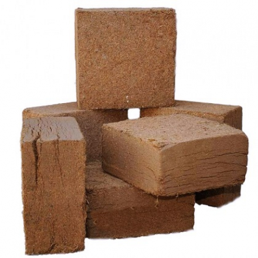
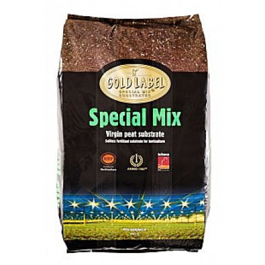
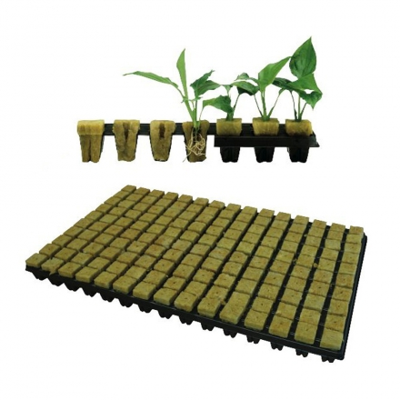
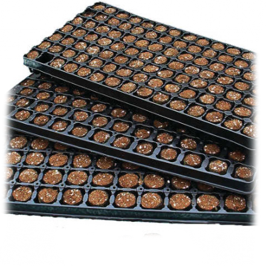

Выбор правильного субстрата определяет, насколько эффективно растение будет усваивать питательные вещества и сколько кислорода получат корни. Основа для выращивания влияет на скорость роста, размер соцветий и общую устойчивость растения к болезням.
Популярные виды субстратов
Почвенные смеси (Земля)
Классика гровинга. Лучше всего использовать качественный торфяной грунт с добавлением перлита и вермикулита для рыхлости. Прощает многие ошибки новичков.

Кокосовый субстрат
Гибрид земли и гидропоники. Отличная аэрация и удержание влаги. Требует строгого контроля pH и регулярного использования удобрений (сам по себе бесплоден).
Минеральная вата
Профессиональный выбор для гидропоники. Обеспечивает идеальный баланс воды и кислорода, что ведет к взрывному росту, но требует опыта в питании.

Сравнение характеристик
Краткий гид по выбору основы:
- Для новичков: Рекомендуем готовую качественную землю (Soil) — она содержит запас питательных веществ на первые недели.
- Для максимального урожая: Кокос или гидропоника (DWC) позволяют растению расти быстрее за счет лучшего доступа кислорода к корням.
- Для аутдора: Лучше всего подходит местный грунт, обогащенный органическими удобрениями и разрыхлителями.
Важность разрыхлителей

Независимо от выбора основы, корни не должны «задыхаться». Для этого в субстрат добавляют разрыхлители:
Перлит
Белые гранулы вулканического стекла. Предотвращают слеживание почвы и улучшают дренаж.
Вермикулит

Помогает удерживать влагу и питательные вещества, постепенно отдавая их корням.
🌿 Где сажать растения?
Подберите правильный объем горшка под ваш субстрат и сорт конопли.
Емкости и горшки